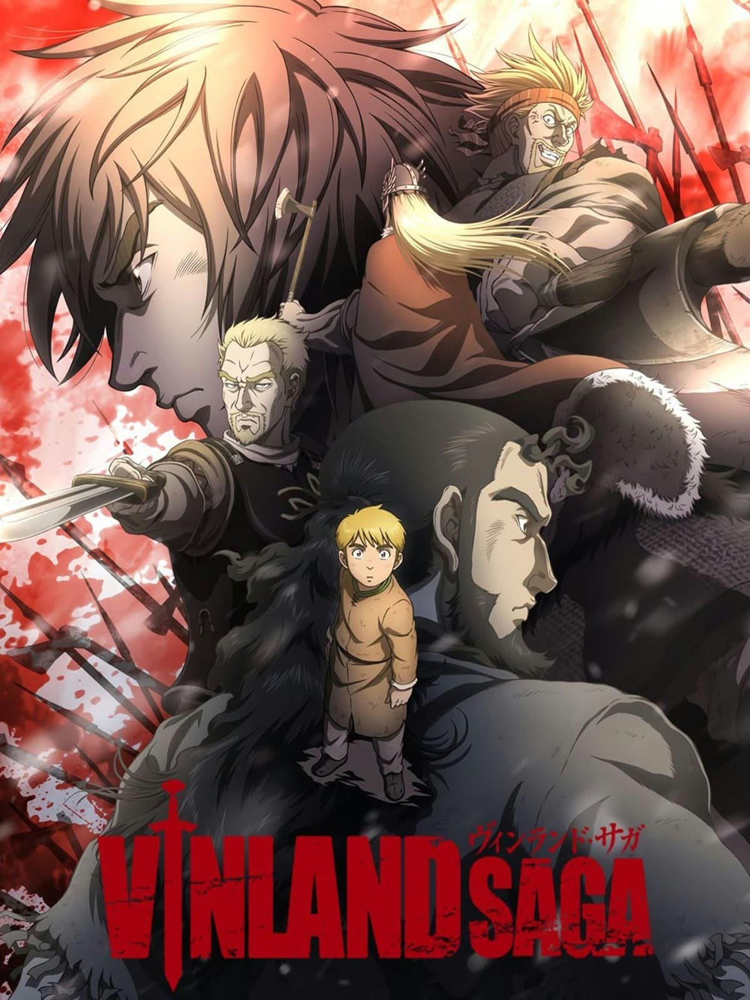

UNOFFICIAL FAN STORY · CHAPTER 01
Vinland Saga
A young sailor joins a voyage toward a peaceful land, discovering that the hardest journey may be learning to live without revenge.
Chapter One: A New Beginning
The sea was iron-gray when Einar boarded the longship. He carried a small carved bird from his family’s farm and a promise to see a land where no one needed to fight for every harvest.
The crew argued about glory and conquest, but Einar spent his days repairing nets and sharing food with the quietest sailor aboard. During a storm, their mast cracked and the ship drifted toward sharp rocks.
Einar suggested they cut the heavy decorations from the bow to lighten the vessel. The captain hesitated, then agreed. By working together, the crew steered into a sheltered cove.
At sunrise, Einar planted his carved bird in the sand. The voyage had not made him a warrior. It had taught him that building a future could take more courage than winning a battle.
This is an unofficial, original fan-made story and is not affiliated with the official creators or publishers.